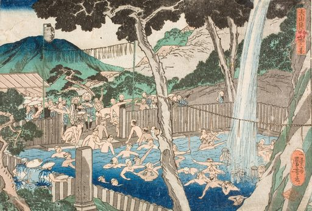

1. Rōben_Waterfall_at_Mount_Ōyama
Utagawa_Kuniyoshi
视觉
- 构图：横向构图
- dominant palette: #a09080, #b0a090, #c0b0a0, #908070, #e0d0c0
用途
- 海报背景
- 书籍封面
- 视频分镜参考
- 动画参考帧
Prompt seed
ukiyo-e inspired vintage art print, Rōben_Waterfall_at_Mount_Ōyama, public domain print